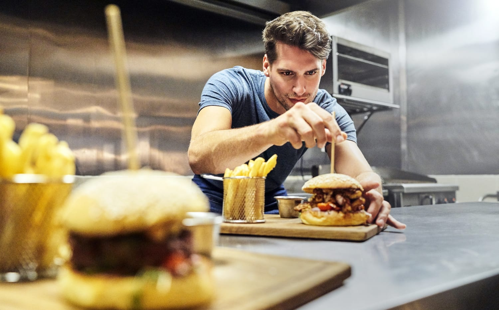

Om Kocken
Bakom grillarna på Midlife Burger Crisis står Marcus Lindgren, en kock med över 20 år i branschen och en livslång passion för det perfekta burgarpåtaget. Marcus började sin karriär på klassiska krogar i Göteborg men tröttnade snabbt på det stela kökslivet.
"En bra burgare är som jazz", säger Marcus. "Det finns regler, men det är när du bryter dem som magin händer." Hans signaturburgare. The Chum Bucket är ett bevis på just det: dubbel smashad köttpuck, rostad jalapeñosmör och en hemgjord sås vars recept han vägrar avslöja.
När han inte experimenterar i köket hittar du honom på Hisingen med sin hund Ruffe eller på jakt efter vintageskivor på Järntorget.
